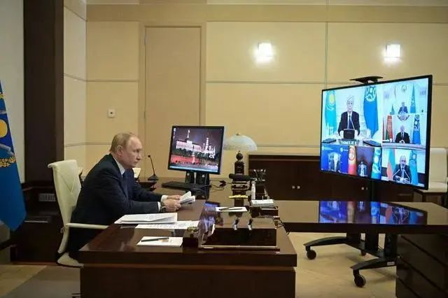

收录于合集
#俄罗斯 2 个
#哈萨克斯坦 2 个

作品简介
作者 ： 郑润宇，莫斯科大学哲学系政治学博士，华东师范大学俄罗斯研究中心讲师。
来源 ： 《俄罗斯研究》，2011年第5期。

北京时间10日下午3时，集安组织集体安全理事会以视频形式召开特别会议，俄罗斯总统普京表示，集安组织不会允许成员国出现所谓“颜色革命”的场景。
文章导读
1月10日，集体安全条约组织就哈萨克斯坦局势召开成员国领导人视频峰会，哈萨克斯坦总统托卡耶夫对俄罗斯总统普京迅速解决向哈派遣集安组织维和部队的问题表示感谢，并表示近日发生的是“未遂政变”，他很确信恐怖分子，包括外国恐怖分子直接参与了对哈萨克斯坦的入侵。集安组织是俄罗斯主导的政府间军事联盟，成员国包括亚美尼亚、哈萨克斯坦、吉尔吉斯斯坦、塔吉克斯坦、白俄罗斯。 此次向哈萨克斯坦派兵是集安组织在其成立20年历史上第一次向成员国部署军队，集安组织的这次行动是否是俄在中亚地区扩大影响力的一次尝试？将对俄哈关系乃至未来欧亚格局产生何种影响？
本文认为，在俄罗斯对外战略中，“后苏联空间”一直占据着极其重要的地位，俄罗斯多年来一贯通过整合分散的“后苏联空间”，最大程度地推动以俄罗斯为主导的次区域一体化。 在“后苏联空间”中，哈萨克斯坦始终扮演着重要的角色，俄哈关系构成俄罗斯重塑“后苏联空间”的一个重要环节。作者认为，俄罗斯追求在世界上“最大行动自由”与哈萨克斯坦确保自身“自主性”的互动过程中，俄哈之间构建出特有的安全模式。 作者通过对俄哈之间存在的三种复杂安全模式进行全面的梳理，同时以北美的“美国—加拿大”安全模式为参照系进行对比分析，全面深入展示了俄哈两国的战略关系，有助于读者评估俄哈安全合作的现状及前景，以及这种安全模式对整个欧亚格局产生的深远影响。欧亚系统科学研究会特编发此文，供读者思考。文章原刊于《俄罗斯研究》，仅代表作者本人观点。
在俄罗斯全球战略中，“后苏联空间”不仅始终是其拓展大国影响力的重要舞台，也是其推进符合俄罗斯意志的新国际安全秩序的重要试验场。但是，由于俄罗斯自身国力有限，其对“后苏联空间”力量的投入只能是有选择地进行。 在“后苏联空间”众多的国家中，哈萨克斯坦始终是俄罗斯长期可靠的战略伙伴。
俄哈战略关系不仅对两国，而且对整个“后苏联空间”都有重要意义。它既是两国学术界研究的重点，也是两国决策层评估自身国家实力及国际影响力的重要内容。 俄哈间的安全关系是否可以视为俄罗斯建立新的“俄式”双边及多边安全模式的尝试？ 我们有必要对其存在及发展的可能性作深入分析与评估。
针对俄哈关系在“后苏联空间”的特殊地位，笔者尝试从两个角度对俄哈间的安全模式进行解读：
1. 梳理俄哈关系中存在的集体安全模式、共同安全模式、合作安全模式这三种复杂交错的安全模式；
**
**
2. 通过“后苏联空间”中的俄哈关系与“美洲空间”中的“美国-加拿大”关系进行比较，评估俄哈战略合作关系是否会形成一种俄版的美加关系形态。
01
“后苏联空间”的战略定位
在俄罗斯全球战略视线中，“后苏联空间”仍然是俄罗斯的重要战略依托。确保对“后苏联空间”的主导影响力，是其对外战略的重要内容。从安全角度来看，“后苏联空间”既是俄罗斯国家外部安全的重要缓冲地带与传统利益区，又是对俄罗斯安全构成直接威胁的外部不稳定区域，诸如极端势力、恐怖主义势力等渗入俄罗斯的活动主要存在于这个地带。这个区域的安全与稳定对俄罗斯有着重要意义。俄罗斯在欧亚大陆积极地开展多边活动，动机不仅仅是希望解决该区域各国共同面临的挑战，更主要是希望以此获得并提升其在全球事务中的地位。 整合分散的“后苏联空间”的力量，最大程度地推动以俄罗斯为主导的次区域一体化，是俄罗斯多年来一贯推行的方针政策。 俄罗斯在多边层面组建欧亚经济共同体、集体安全条约组织等重要区域组织，在双边层面则有选择地加强与“后苏联空间”中颇有影响力的国家的关系。
然而，“后苏联空间”各国独立20年来的发展趋势发生了很大的变化，区域层面的差异加大，“后苏联空间”的完整性已经不复存在。 在现实中，“后苏联空间”更大程度上只是由历史遗产、经济联系、相似的政治体制联合起来的国家集合体，作为单独的完整的地缘政治主体正处于消失的过程中。 俄罗斯对整个区域缺乏明确的战略性布局和安排，没有明确的战略角色定位，完全从俄罗斯的自身利益出发推行区域安全合作，因此显得行动迟缓而问题重重。首先，尽管俄罗斯与“后苏联空间”其他国家的关系有明确的法律规定，对有关安全合作的多边及双边问题也有清晰的规范， 但在实际安全合作中，更多的还是以俄罗斯与具体国家的信任关系为主要考量标准； 第二，虽然在安全领域的多边合作中有集体安全条约组织与上海合作组织这两个选项， 但俄罗斯明显倾向于前者，而对于更有安全合作潜力的上海合作组织则兴趣较低； 第三，俄罗斯对外军事援助不再是无条件的， 俄罗斯希望通过一种以低投入、低成本的方式维持其在地缘政治中的优势； 第四，俄罗斯特别对中亚国家保留下来的苏联时期的军备及相关基础设施表现出兴趣， 希望以此为基础来建立与这些国家的军事联系，并使俄罗斯的军事存在能顺理成章地驻扎在这些国家。
俄罗斯的国力目前已无法做到对“后苏联空间”各国的全面支持。因此，力量的投放只能是有选择的。俄罗斯权威智库“俄罗斯外交与国防委员会”在给俄罗斯总统撰写的咨询报告中明确提出： 俄罗斯既要重视“后苏联空间”，但又不应把自己的大国角色仅限制在“后苏联空间”。“后苏联空间”不再是俄罗斯无条件的工作对象。 “俄罗斯将把与‘后苏联空间’地区国家的关系转到传统的大棒加胡萝卜的国际关系模式上”。因此，也可以这么说，俄罗斯在“后苏联空间”并没有什么明确的区域战略设计，正如俄罗斯战略与政治研究中心副主任И·兹瓦杰利斯卡娅（И.Звягельская）所说： “俄罗斯在‘后苏联空间’内并没有完成真正的政治整合与一体化，俄罗斯还不可能对这个区域形成一种明确的战略，目前主要是通过俄罗斯与有关区域国家建立双边关系来实现。”
02
俄罗斯对外安全视线下的哈萨克斯坦
在“后苏联空间”中，哈萨克斯坦扮演着重要的角色。俄哈关系始终是俄罗斯寻求整合“后苏联空间”的一个重要环节。 哈萨克斯坦既强化“自主性”建设，又发展与俄罗斯的特殊战略关系。 俄哈关系不仅直接影响着哈萨克斯坦的“自主性”建设进程，而且对整个区域的安全与稳定产生重要影响。 从俄罗斯的全球视野关注俄哈关系，同时结合哈萨克斯坦的国家视线审视和研究俄哈关系，具有重要的现实意义。
哈萨克斯坦独立后的20年，经济实力和政治影响力大幅提高。在推进自身现代化进程中，哈具备成为区域综合实力强国的条件。哈萨克斯坦还通过各种战略对话的形式，发挥其在区域及全球经济、政治、安全等领域的桥梁作用，并显示出其寻求确立自身为中亚政治核心国的雄心。 哈萨克斯坦已经成为“后苏联空间”地区发展的领头羊。哈萨克斯坦能否真正扮演好区域大国的角色，进而通过俄哈之间的合作，形成双引擎带动整个区域发展，一个重要前提是哈萨克斯坦本身的安全环境得到充分的保证。 哈萨克斯坦的安全内容，可以从其国内安全与外部安全两方面来观察。
从内部安全层面来看，哈萨克斯坦独立以来经济恢复良好，很大程度上掩盖了其政治转型的不彻底性。 虽然在法律及政治架构上已经建立起民主体制，但在实际的国家动作中仍然惯性地沿用苏联时期的许多政治动作模式。哈萨克斯坦的政治改革在缓慢中前行，存在诸多问题，并没有达到较为合理的民主政治生态，其发展还有待提升。此外，“后苏联空间”国家因为政治转型不彻底而形成的问题一贯被强调是内政，涉及国家主权问题，不接受外来的解决方案与干涉。在这个层面，俄罗斯与哈萨克斯坦有一定的共识，即双方都不评价对方涉及政体方面的国内安全问题，更没有明确的行动在这方面促使其改变。
与俄罗斯始终充满不安全感以及对外部世界的不信任相反，哈萨克斯坦认为其自身并不面临明显的外部威胁， 这可以从哈萨克斯坦独立以来最重要的几份文件中看出，如：1997年在《哈萨克斯坦2030战略》中，国家安全被称为“第一号任务”；10年后的2007年作了进一步的完善与补充，即《关于进一步落实哈萨克斯坦2030战略的有关措施》 ，文件中明确指出：“在目前和不久的将来，哈萨克斯坦国家安全不会遭遇直接的军事侵略和领土完整的威胁。无论中国、俄罗斯、西方和穆斯林国家都没有足够的动机来侵犯我们。”哈萨克斯坦认为，世界正逐渐放弃军事对抗，竞争正从军事转移到政治和经济领域。“我们希望这种趋势将占主导地位，我们将尽最大努力促进和平与睦邻关系的建立。”此外，丰富的自然资源也是其国家安全的战略要素，哈可以通过能源外交来维护国家利益的安全。
但是“在任何自助系统中，单元都对自身的生存感到忧虑，而这种忧虑限制了它们的行动。” 哈萨克斯坦的安全危机意识主要来源于自身。哈萨克斯坦在融入全球经济一体化的过程中，有可能自觉或不情愿地卷入各种地区冲突， “可能涉及军事、政治、经济、教派等不可预知的国家漩涡。”哈萨克斯坦独特的地缘政治地位、丰富的自然资源，使其成为在贸易和运输上连接欧亚的天然走廊，具备发展国际和区域合作的巨大优势。 但这种特殊的地缘优势，也使其本身可能成为区域不稳定因素的一个中转站， 例如毒品、武器、危险物资走私、贩卖人口、有组织犯罪等的输送通道。此外，中亚区域激进主义势力，在往东向俄罗斯境内渗透、往西与阿拉伯激进势力联系、往南与阿富汗激进势力的接触中，哈萨克斯坦也是一个过境的空间。这些都是构成对哈萨克斯坦安全威胁的重要外部隐患。 哈萨克斯坦周围安全局势不断出现新的情况，应对这种潜在的危机，更迫切的是需要建立有效的监测系统。因此，哈萨克斯坦在对外政策中将安全置于绝对优先的位置，并主动发展与世界主要国家的关系。 正是在这种需求下，哈萨克斯坦独立以来将安全重点更多地放在建立地区安全结构上。《哈萨克斯坦2030纲要》强调与自己的重要邻国俄罗斯加强关系，发展与中国的关系，推动中亚一体化进程，加强与中东国家的关系，这是其对外构建安全结构的首要层面。与此同时，它也加强与世界主要“工业民主国家”的关系。
正如纳扎尔巴耶夫在2010年国情咨文中所强调的，“哈萨克斯坦的外交方针将以《对外政策构想》为基础，我们将采取积极、务实和平衡的对外政策，维护国家利益，提高国际声望，巩固国家、地区和全球的安全。”正是在这种安全认知背景下，在邻国中寻找一个可靠的盟国，成为哈萨克斯坦长期的外交主题。 在“后苏联空间”，哈萨克斯坦与俄罗斯关系极为密切。俄哈之间建立的“牢不可破的团结”的双边战略关系，是两国共同利益的需要。 “尽管独立后的哈萨克斯坦在国际政治中有了更多的外交选择，但是俄罗斯对于哈萨克斯坦仍然具有较高的战略意义。” 对于俄罗斯来说，加强对哈萨克斯坦的政治影响力，在经济条件允许的情况下推动俄哈一体化的进程，是维护本国安全和维系俄在独联体势力范围影响力的重要内容。对于哈萨克斯坦来说，在保持政治独立性的同时发展与俄罗斯的经济合作，避免成为俄罗斯政治附庸，这是民族独立国家的首要任务。 因此，在不破坏国家政治独立和经济利益的情况下，与俄罗斯发展更为紧密的联盟关系也符合哈萨克斯坦的战略利益。
03
俄哈之间存在的三种安全模式
俄哈两国关系发展的总体态势缓慢而平稳。 随着俄罗斯对“后苏联空间”影响的降低，俄罗斯对加强俄哈关系显得心有余而力不足。虽然，俄罗斯在政治、军事、经济方面都对哈有很强的影响力，但是随着哈萨克斯坦的逐步强大，对俄绝对依赖性正在逐步下降。 从哈萨克斯坦的角度来说，尽可能配合俄罗斯的有关战略安排，支持俄罗斯仍然在此区域扮演重要角色，促进在“后苏联空间”中形成俄哈双引擎的局面，以此用低成本提高哈的国际影响力，成为其对俄关系的基本思路。
在俄罗斯追求在世界上“最大行动自由”与哈萨克斯坦确保自身“自主性”的互动过程中，俄哈之间形成了复杂的安全模式。 在“安全”问题上，俄罗斯国际关系理论界的不同流派有着不同的声音，但现实主义和地缘政治学仍然占据主导地位。相较于2000年版的纲要，俄罗斯新的战略安全构想已经完全摆脱了苏联时期对“安全问题”的视角。在新的战略安全构想中，安全问题的核心是俄罗斯的国家利益。它不再关注国际上方方面面的安全问题，而是从自己的实力出发，有选择有重点地进行布局。俄罗斯学者А·А·谢尔古宁（А.А.Сергунин）在研究俄罗斯对外安全关系时，着重提到三种模式：集体安全模式、共同安全模式、合作安全模式。这三种模式也反映在俄哈之间的关系中，体现了学理思考与现实操作的结合。
（一）集体安全（collective security）
集体安全模式是针对外敌使用武力进行侵略而建立的。 在19世纪末20世纪初，集体安全被认为是针对国家间正式的战争。它是一种特殊的国际体系，其中每一个国家都承认其他国家的安全就是所有国家的安全，他们同意并且愿意对侵略者作出集体反应。按照集体安全理论，加强联盟力量的途径是聚集更多的国家来参加这个体系。
俄罗斯的帝国模式习惯于运用集体安全来构建一种对外安全结构。 这与俄罗斯的国家安全思想以及俄罗斯传统的政治文化、历史记忆有关。历史上的俄罗斯帝国，总是以地缘边界扩张为主要特征，从地缘安全角度出发，在军事上构建“缓冲地带”及“势力范围”，以此确保自身安全。即使在“后苏联空间”，俄罗斯及中亚的独联体地区依然习惯于按照这种思路构筑一种集体安全。
俄罗斯在“后苏联空间”极其重视集安组织在集体安全中的作用，加大防御纵深，以空间争取时间，以此支撑俄罗斯在“后苏联空间”推行的地缘取向的安全观。但从安全的内容来看， 俄罗斯打破了传统安全观仅仅局限于军事领域的限制，把安全的内容从军事领域扩展到经济、内政、社会、信息、边界、生态和国际等诸多领域，从而实现了安全内容的综合化。
《2020年前俄联邦国家安全战略》中强调，“依靠建立高技术和多功能边防综合设施，特别是与哈萨克斯坦、乌克兰、格鲁吉亚和阿塞拜疆交界处的边防综合设施，提高边防的有效性，特别是俄联邦北极地区、远东和里海方面边防的有效性，完成确保俄联邦边防安全的任务。”
尤其是在集体安全的军事方面，俄在中亚“享有更大的软实力”，目前没有其他国家可以替代。以中亚实力最强的哈萨克斯坦为例，尽管哈萨克斯坦在经济上不断探寻出具有自主性的发展空间，但在军事上，哈萨克斯坦的国防安全在很大程度上仍然要依靠俄罗斯的军事力量为后盾。哈武装部队的军事编制、军官培训、武器装备等主要依靠俄罗斯。除了在传统军事安全领域俄罗斯在俄哈集体安全结构中拥有主导性的优势外，核能及航天等领域（拜科努尔发射场）的合作也构成俄哈间集体安全的重要内容。
哈萨克斯坦积极推动集体安全层面开展的战略对话。 哈萨克斯坦设计的安全结构是注重集体安全策略，强调与独联体国家、特别是俄罗斯及中亚国家的战略同盟关系，参与独联体集体安全条约框架下的活动。其中哈萨克斯坦全力配合俄罗斯组建具有实战能力的集体安全快速反应部队，就是一个重要的实践内容。但这个层面的集体安全模式，目前有一个明显的问题，即 作为一个安全共同体，他们都意识到没有直接的外来威胁，但对于涉及成员国内部可能存在的安全问题以及成员国之间可能存在的安全危机却全然没有行动能力。
（二）共同安全（Common Security）
共同安全（Common Security）这一概念最早源于欧洲，主要是 针对冷战时期东西方对峙的局面，试图通过增加东西方之间的合作，建立信任措施来缓解由战略核威慑带来的欧洲冲突和紧张局势。 瑞典的帕尔梅委员会（Palme Commission）在题为《共同安全：一种生存蓝图》的报告中，首次提出了这一理念并使之概念化：“避免战争，尤其是避免核战争，是一种共同的责任。”帕尔梅委员会报告所提出的共同安全，其实质是与对手一起获得安全，而不是针对对手的安全。因此，共同安全反对威慑原则及其思维方式，认为以“威慑”观念为基础的战略思想和联盟体系会引发循环性的安全困境和军备竞赛，从而产生更大的不安全。同时，共同安全倡导非刺激性防务和非进攻性防务，也有其积极作用。欧安会正是在这样的思想基础上产生的。 “共同安全”强调抛弃零和思维，其核心思想在于这样一种安全信念：真正的安全只可与敌手一起获得；国与国之间的生存与安全是相互依赖的，避免战争尤其是核战争，需要靠各国的共同努力；摒弃可能导致军备竞赛升级和“安全困境”的“威慑”思想。
在推行欧亚一体化理念上，俄哈正是从建立一种共同安全的思路进行的，但侧重点有所不同。 俄罗斯强调抛弃原先冷战时期存在的所有机制和架构，建设一套新的欧洲安全游戏规则。 在2009年、2010年欧安组织会议上，俄罗斯就提出了“新欧洲安全”的设想。 而哈萨克斯坦则选择遵循现有的游戏规则，对秉承共同安全理念的欧安组织给予积极的配合，并寻求通过这个平台，使自身也能实现一种近乎“脱亚入欧”的状态。 在与欧洲建立共同安全的过程中，哈萨克斯坦除了支持以共同安全思想为核心理念的欧安组织，还以共同安全为理念在亚洲推动“亚信会”的建立。哈萨克斯坦认为有必要提出欧洲大西洋地区和欧亚大陆安全的不可分割性。纳扎尔巴耶夫明确提出，“柏林墙倒塌以后，柏林，欧洲已经实现团聚。今天我们要拆除欧洲和亚洲之间的墙，并实现真正的欧亚共同安全”。这种完全通过营造共同安全来实现自己安全的思路，在俄罗斯学术界有一定的市场，但俄罗斯的决策层却并不完全认同。2008年，俄罗斯总统梅德韦杰夫提出“新欧洲安全框架”方案，但他想打造俄版新的共同安全架构的提议完全得不到西方的任何积极回应，这就使得俄罗斯高层对这种理念的可行性更加失去了兴趣。
欧洲主流倡导普世民主价值观是共同安全建立的基础，然而俄哈并不认同这一点，他们认为共同安全的前提是国内稳定，“稳定”与“安全”是直接关联的。 因此，当共同安全涉及到俄罗斯或哈萨克斯坦国内政治层面时，这种共同安全就无法推进了。
（三）合作安全（Cooperative security）
1990年9月，加拿大外长约·克拉克在联合国大会上首次提出了“合作安全”这一具有开创性的理念，即 通过合作实现安全。它所主张的是磋商而非对抗，是友好而非威慑，是透明而非秘密，是预防而非纠正，是相互依存而非单边主义。 合作安全相对于前两种安全模式而言，敌我性、冲突性不是其重要的考虑内容，其基础是平等的参与。
合作安全更综合地考虑国家利益和国际利益，寻求更为合作的方式来解决问题。合作安全的前提假设不是基于“零和思维”而是“合作”的战略关系，其预期结果是使参与者获得共赢。“合作安全”作为处理国与国之间关系的一种新型模式，与其他的安全模式相比，它更具有包容性、渐进性、预防性和灵活性等特点和优点。合作安全设想了一种更为渐进式的发展多边机制的途径。 合作安全在安全概念上也更为灵活，既重视传统安全结构的重要性，又认为应使多边主义以较为特别的、非正式的和灵活的过程向前发展，寻求通过制度化的多边主义来构建一种安全环境 。因此，这种安全结构对于中小国家更有吸引力。中小国家可以在多边主义框架下，在互相交叉的利益结合中，确保自身的安全与国家利益的维护。
俄哈间在非传统安全领域越来越多地尝试采用合作安全的模式。 如在上海合作组织框架下的非传统安全合作，以及在维护共同经济安全中寻求建立统一经济空间的努力等。俄哈两国在共同推进有别于西方的欧亚一体化进程中，通过有效的机制及组织来实现合作安全。尤其是上海合作组织的合作安全模式引入了中国因素，对哈萨克斯坦而言，是构建了一种相对平衡的区域格局，推动了一种真正意义上的多边安全合作的平台。
合作安全由于并没有有力的约束机制，更多地显示为一种共同参与的模式。 俄罗斯在这种模式中仅仅充当参与的角色，无法发挥他的绝对优势，因此，俄对此种安全模式就缺乏足够的热情。哈萨克斯坦对通过合作安全寻求一系列国际机制来维护地区安全一直非常积极，并作出了一些尝试。 纳扎尔巴耶夫认为，参与建立国际社会集体安全体系并承担义务，是哈萨克斯坦实现其战略目标的重要途径之一。哈萨克斯坦寻求在推进战略对话的过程中发挥其地缘优势的潜力，同时促进其他行动者的利益，推进包括欧安组织、上合组织、伊斯兰会议组织等重要国际组织间安全的对话与交流，发挥桥梁作用，促进它们之间的合作。此外，哈萨克斯坦积极发展与美国等西方国家的战略合作关系，参与北约“和平伙伴关系计划”框架内的部分活动，加强同美国与北约的军事合作。同时，哈萨克斯坦积极发展与中国的睦邻友好合作关系，参与上海合作组织框架内的活动，发展与中国在军事技术和反恐方面的合作。
合作安全只是一种预防机制，不是一种危机处理机制，在应对诸如北高加索至中亚的恐怖主义威胁、打击大规模毒品贸易等的过程中，缺乏有效的应对能力。 特别是在预防机制没有健全起来的情况下，如果发生危及安全的严重形势，合作安全的协商机制就可能显得很软弱，甚至无能为力。
04
俄哈之间安全模式的评估：共性、分歧、希望
俄哈之间存在多重安全模式，未形成一种稳定的运作机制，在一定程度上只是原有双边合作的一种惯性前进，也体现了俄哈共同在世界变局中寻求自我最安全状态的一种探索。 从俄方角度来说，俄哈间的安全模式一定程度上是俄罗斯“全球渗透”的一个新的出发点和重要尝试。俄罗斯最有影响力的独立智库――外交与国防政策委员会政策项目主任费奥多罗夫（А.В.Федоров）曾撰文提出“全球渗透”（глобальноепроникновение）概念，认为独联体框架下的集体安全模式显然已经过时，独联体的潜能实际上已消耗殆尽，事实上已形成了“文明方式的离婚”。费奥多罗夫认为，俄罗斯需要的不是不惜一切代价来维护独联体，而是应该通过实际有效的双边关系及协议，来维护俄罗斯在这一区域各个层面的利益，强调积极主动地参与世界机制的建立，主动地、有重点地向全球扩展自己的影响力。卡内基基金会莫斯科中心主任Д·特列宁（Д.Тренин）也曾撰文指出“现在俄罗斯对融入西方一体化的欲望大大减弱。取而代之的是俄罗斯希望恢复其全球影响力，至少是一个区域的核心国家，并假设未来克里姆林宫能再次对抗北约。”由此我们发现，俄罗斯不再把全部重心投放于“后苏联空间”，而且对原有的安全模式缺乏足够的信心，因此在不断探寻一种创新型的安全模式。
在俄哈之间存在的三种安全模式中，俄罗斯较为熟悉的是前两种模式的运作，并且在寻求一种更具突破性的安全架构。相对而言，哈更重视后两者，因为这使得哈能在一定程度上可以以主人的身份参加。 显然，在与俄罗斯关系紧密的集体安全架构中，哈萨克斯坦很难担当主角，而只是一个配合俄罗斯的小伙伴。哈萨克斯坦作为一个相对较小的国家，出于自身国家安全的需要，更愿意将美国、中国等国引入该区域，从而设置该区域新的游戏规则，但这正是俄罗斯所担忧的。 哈萨克斯坦寻求建立的是一种多元的集体安全方式，即通过一定程度加入以美国为首的北约集体安全体系，尤其是通过积极参与欧安组织等方式，间接寻求一种既能进入北约安全保护范围、又不开罪于俄罗斯的游离状态。 哈萨克斯坦整体上并未面临大的安全威胁，主要依靠俄罗斯主导的联合军事力量来保障国家安全，目前仍然对独联体集安组织有着明显的依赖。
哈萨克斯坦尽可能地在政策层面支持俄罗斯，尤其是在集体安全层面，与俄罗斯在重大问题上尽可能地保持一致性，促进与俄罗斯建立一种合作安全的模式。 哈萨克斯在军事安全上是集体安全条约组织的积极推动者，在军事装备、快速反应部队共建、军事理念等方面与俄罗斯保持一致。 哈萨克斯坦与俄罗斯在一定程度上已成为集安组织内军事合作的“双引擎”。 而这种军事合作，也是哈萨克斯坦以较小的成本取得俄罗斯信任的一个重要手段。
在共同安全合作领域，虽然俄哈都有热情并且积极参与构建，但具体的侧重点却存在一些差异。共同安全导致将注意力集中于自身内部的安全态势。相对于集体安全，它不具有防御性、进攻性的特征，共同安全体更多的是解决内部的安全问题。 俄罗斯所主张的欧亚区域的共同安全，更强调的是另起炉灶，完全重新建立。 但俄罗斯在欧安组织提出的欧洲安全条约并没有人理会。
合作安全模式还适用于对俄哈都有战略意义的能源问题。 俄哈都是能源大国，能源安全在两国的国家安全中有着极其重要的作用。围绕油气的开采和运输，俄哈之间在一定程度上仍然维系着传统的共同利益。但是，俄哈同属能源输出大国的身份，必然使得双方存在着在能源领域的竞争与潜在冲突的可能。
能源在俄罗斯国家发展以及维护俄罗斯大国地位中发挥着至关重要的作用。正如《2020年前俄罗斯能源战略》所明确规定的：独联体是俄罗斯国际能源合作的重点方向。 俄罗斯希望将独联体特别是中亚国家的天然气等能源资源长期、大规模地吸收到自己的燃料能源体系中。 俄罗斯在独联体能源活动的重要方向是解决里海问题，包括准备关于里海法律地位问题的公约也是合作的重点方向。从俄罗斯的国家安全战略中可以看出，能源安全有可能上升为军事问题，俄罗斯特别强调，不排除运用军事力量解决里海与中亚的能源争夺问题。
05
假设：俄哈战略关系――俄语世界的“美加关系”
评估俄哈之间的安全模式，如果仅限于“后苏联空间”以及传统的地缘安全逻辑，是很难看出其真正的前景的。但过于关注俄罗斯追求的新的安全秩序，也无法真正认识现实的俄哈安全结构。针对俄哈之间存在的这种变化中的安全模式，笔者尝试对比另一大陆上类似的两个国家的安全模式，即北美的美国—加拿大之间的安全模式，并以此为参照理解俄哈之间安全合作的现状及前景。
美加关系是当代世界上最成功的国际关系范例之一，如果能效法美加的安全模式来经营俄哈安全合作架构，不仅对俄哈两国的安全有益，也会使整个欧亚区域安全更有保障。俄哈之间与美加之间是否存在可比性？笔者认为， 在文化根基、价值取向、国家利益、对外关注重点，以及各自系统中存在的问题与冲突等方面，都有很强的可比性。 俄哈之间建立一种类似“美加模式”的安全关系是可能的。
加拿大地广人稀，并且由于殖民时期的相似经历，它和美国一直保持着千丝万缕的联系。现在加拿大和美国签署了防卫协议，加拿大的安全由美国来保护，加拿大则主要以发展经济为主，并不拥有强大的军事实力。目前，美加两国是盟友关系，但实际上加拿大在军事安全上很大程度依附于美国。俄哈与美加间的可比性就在于，苏联解体后，哈萨克斯坦才第一次真正成为独立的国家，但它与俄罗斯存在着文化相近、地理相近、历史相近、经济联系密切的特点，形成了一种类似于美加安全格局的态势。在俄哈国家建设中，由于体制的接近，也具备美加之间诸多国家层面的共性，如政治文化的共性，国家利益评估、对外关注重点上都有很大的相似性。俄哈之间在国家力量上的不对称性，在很多层面非常类似于美加之间的力量对比。
俄哈之间安全合作中存在的诸多问题也存在于美加之间。诸如哈对于俄主导的一体化的忧虑，非常类似于加对于美所主导的泛美组织的看法；俄哈所存在的主体民族与少数民族的问题，同样也与美加之间有着很强的相似点；在俄哈存在直接分歧的里海资源分配的纠结中，美加之间在北极圈的争夺也有相同的态势；而俄哈间在对诸如格鲁吉亚这种热点问题上的态度，更像是俄版的“古巴问题”上美加之间的分歧。
与美加稳定成熟的安全模式相比，俄哈安全关系存在着明显的不稳定性，比如原有的意识形态和体制的失败，以及民族主义和原生态宗教的复兴。 因此，虽然政治文化相近，但俄哈间深层的文化差异在拉大，尤其是俄罗斯排外的民族主义的复活以及哈萨克斯坦伊斯兰文化的复兴，都影响着两国在深层安全合作中是否能真正同心同力。作为苏联解体后政治转型不彻底的表现，俄哈的威权体制结构本身存在着一定的脆弱性。此外， 还有一个重要的因素，就是其所受到的复杂的外部影响，而且参与者本身有强大的力量如美国、欧盟、中国等。 对俄罗斯而言，在整合“后苏联空间”中，最主要的依靠对象就是哈萨克斯坦；而对于哈萨克斯坦来说，国家安全有诸多选项，俄罗斯并不是唯一选项。
相比美加之间的亲密关系，俄哈之间强调的“战略伙伴关系”仍有很长的路要走。巩固他们之间的关系不能仅仅停留在决策者简单的“贴标签”的方式上，更需要拓展和加固他们在国际合作中的空间。俄哈都要防止回避讨论双方间存在的“棘手问题”。
06
结论
笔者认为， 俄哈间的安全战略关系，是以俄罗斯主导、哈萨克斯坦配合为主要形态。 在俄哈安全合作的进程中，俄罗斯强烈依赖传统经验，同时又处在极力追求一种理想安全状态的探索试验阶段。俄哈双边安全合作的内容是俄罗斯推动整个“后苏联空间”安全格局转变的重要一环。俄罗斯把“后苏联空间”作为其恢复大国地位的重要依托，以此为起点来争取在未来世界中最大的行动自由。哈萨克斯坦则在强化自主性建设的过程中，与俄罗斯维持一种既亲密又保持距离的安全关系，在确保独立的前提下，实现自主性的发展。
俄哈之间安全合作的理念随着国际安全格局的变化不断调整，而在实际的运作中，俄哈间统一的安全构想和行动更多的是一种惯性的前进。 在这过程中，俄哈之间的安全模式混合着集体安全、共同安全、合作安全的多重模式。 俄罗斯从国家利益出发，倾向于熟悉的集体安全与共同安全模式。出于多边合作的需要，俄对合作安全也存在一定兴趣，但主要根据自己的需要选择性地参与。从哈萨克斯坦视角来看，其更偏重于合作安全与共同安全模式。 哈既配合俄罗斯主导的各种双边及多边区域安全建构设想，又对区域安全新模式主动融入自己的想法。 这主要表现在，哈萨克斯坦不断寻求建构一种多重架构的安全体系，探索通过一种多向度的模式促进合作安全的形成。
俄哈之间这种动态的安全合作模式，随着双方经验的共同积累，以及应对危机过程中逐渐形成有效的机制，将会对欧亚格局产生不可预测的影响。俄哈安全合作的加强，将产生一定的辐射效应，加强松散的“后苏联空间”在安全领域的合作力度，并进一步凝聚俄罗斯的持久影响力。 随着俄哈间在传统安全及非传统安全领域具体合作的深入，原先独联体区域安全合作组织的机能将有可能再次被激活。由俄哈牵头，在“后苏联区域”双边及多边层面的具体安全合作的行动能力将大为提升。 俄哈在打击恐怖主义、激进主义、贩毒等领域将有可能发挥“区域维和宪兵”的角色，对区域内潜在的不安全热点因素真正实行有效的控制。最后，俄哈之间安全模式的运作，有可能促进“后苏联空间”许多国家，如中亚以费尔干纳为核心的诸多国家建构有效解决安全问题的渠道，从而为整个“后苏联空间”真正的安全稳定创造有利的环境。
排版 | 云琪布日
本文章来源于“欧亚系统科学研究会”
文章观点不代表本平台观点